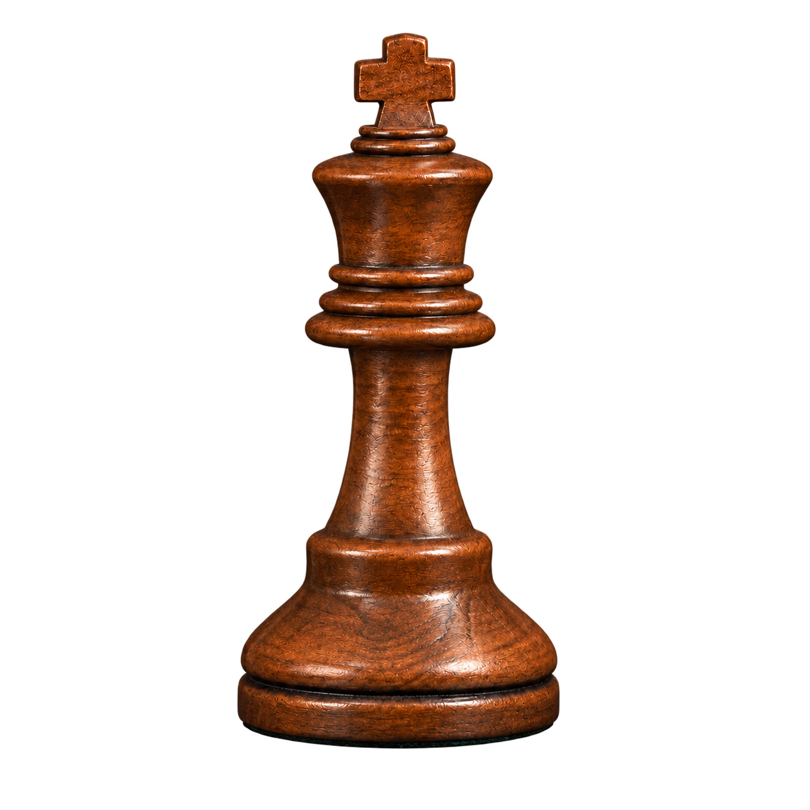
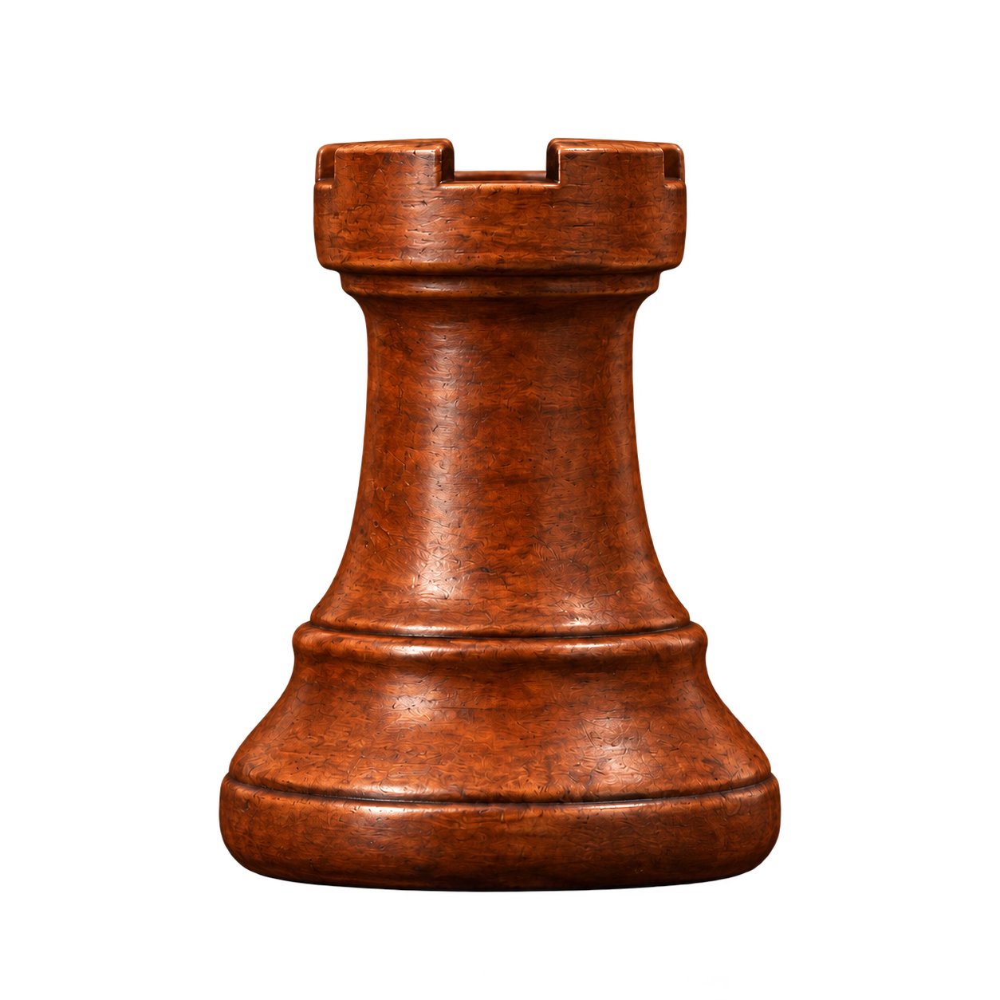

Candidate beside original · matched scale · up to 300 px per image
Base widths matched to the originals, with the king as 100%. Each image keeps its proportions. Scroll sideways on smaller screens. Measurements

